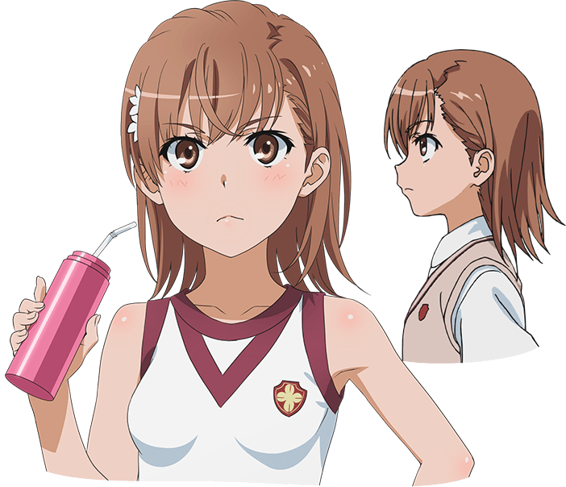
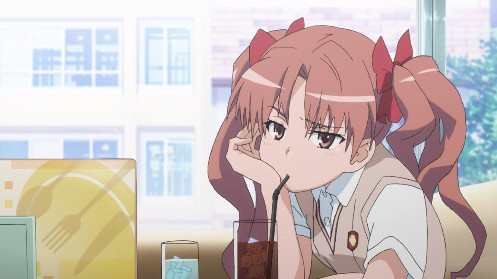
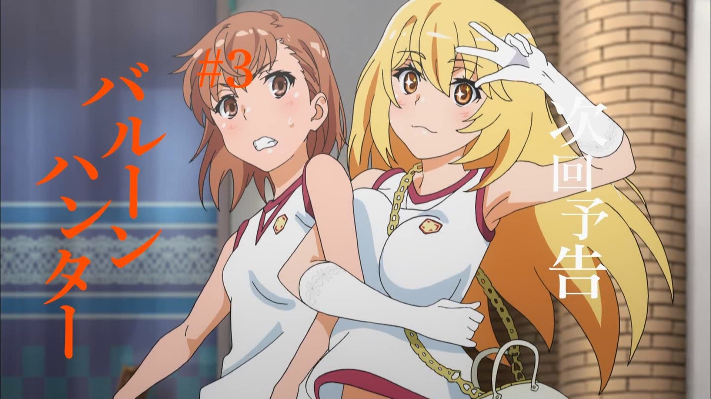
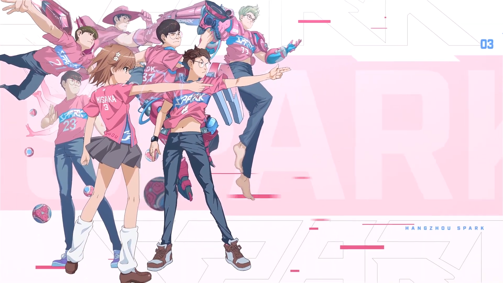

-
About Misaka Mikoto
Mikoto Misaka is a fictional character created by Kazuma Kamachi and first illustrated by Kiyotaka Haimura. She is a major character in the A Certain Magical Index light novel series and the main protagonist of its manga spin-off series A Certain Scientific Railgun.
-
Look

-
Her Best Friend - Shirai Kuroko

-
A Certain Scientific Railgun
The student-filled Academy City is at the forefront of scientific advancement and home to the esper development program. The seven "Level 5" espers are the most powerful in Academy City, and ranked third among them is middle schooler Mikoto Misaka, an electricity manipulator known as "The Railgun."
When strange incidents begin occurring throughout the city, she finds each crime to be connected to the elusive "Level Upper," a legendary device that allegedly increases the esper level of its user. As the situation escalates, it becomes apparent that there is more to the Level Upper than meets the eye, and that Academy City may be a far more twisted place than the glamorous utopia it appears to be.
Toaru Kagaku no Railgun focuses on Mikoto and her friends—and the dangerous situations they find themselves in—as they get caught up in the matter of the Level Upper. As Mikoto says, "There's never a dull moment in this city."
-
A Certain Scientific Railgun S
Mikoto Misaka and her friends are back, investigating rumors across Academy City. Soon, Mikoto discovers something terrifying: horrific experiments are taking place throughout the city, involving the murder of thousands of espers. Moreover, these espers are far from just ordinary people: they are clones of Mikoto herself. Feeling responsible for their treatment, she sets off to put an end to the experiments; however, the forces opposing her are much more dangerous than she anticipated, and Mikoto finds herself up against some of the most powerful espers imaginable.
Toaru Kagaku no Railgun S continues the story of the Railgun as she desperately fights to put an end to the inhuman experiments that she believes she helped cause, her life dragged deep into despair in the process. There's never a dull moment in Academy City, but no one ever said all of them would be pleasant.
-
A Certain Scientific Railgun T
The Daihasei Festival has begun, and that of course means that Tokiwadai Middle School—a prestigious all-girls' middle school—is competing too. Despite the participation of the "Ace of Tokiwadai," Mikoto Misaka, the other students who are participating are still putting their utmost effort into winning, no matter how impossible the feat may seem against her might.
However, not all is fun and games. Due to the festival, Academy City opens to the outside world, and various factions have begun plotting ways to infiltrate the city. Misaka appears to be on their radar, and as the festival proceeds, people lurking from the shadows begin to emerge...
Toaru Kagaku no Railgun T brings back the Tokiwadai Ace and her friends as they dive deeper into the dark side of Academy City. From terrorist attacks to ruthless underground projects, anything is possible in this city.
-
Her Biggest Opponent (or lover perhaps)

-
Her Ability
Mikoto's power is known as the Railgun. She chose the ability name herself, naming it after her famous finishing move. Her ability belongs to a type of power users called Electromaster: those who can generate and manipulate electricity. Mikoto is the most powerful Electromaster in Academy City. Her maximum output is known to be 1 billion volts.
-
Her Personality Part I
To most people, she is considered a 'proper lady', but in reality, she's short-tempered, prideful, and has an improper attitude with some slight tomboyish tendencies (or masculine since she wears boxers and an under shirt) and insecurities, a fact few people know of. Despite this, she is generally friendly and easygoing, and Saten Ruiko and Uiharu Kazari comment on how shocked they are to find that, compared to other Level 5's, she doesn't look down on lower-level espers at all. This is probably because she was originally a level 1 esper and became a Level 5 esper through very hard work, though the fact that all espers start off this way makes this somewhat invalid.
Often times she shows an incredibly immature and selfish side and even tsundere tendencies when her crush, Touma, insults her. To add to this childishness, she has an inclination towards cute things, most specifically, Gekota and Kill Bear merchandise. She likes frog merchandise, but only if it features Gekota. When she realizes that a stuffed animal another person is carrying is just a regular frog, she immediately loses all of her interest in the stuffed animal. She has a very irrational and unexplained fear of bugs, as shown in episode 6 of A Certain Scientific Railgun. She can also be slightly hypocritical at times, getting angry at Touma for not calling her by her name despite never once calling him by his. Her hypocritical tendencies are further shown when she tells Mitsuko to be honest with herself, even though she's a tsundere who's constantly denying her feelings for Touma and has great trouble admitting that she even cares for him, let alone loves him.
-
Her Personality Part II
While generally amicable and humble, Misaka is highly individualistic. She often prefers to be solitary and dislikes the idea of being restricted by rules and duties such of those of Judgement and Anti-Skill. She wishes to avoid endangering other people and relies on her powers to try to solve problems on her own, frequently despite her better judgement.
She has a keen sense of justice, demonstrated by her frequent involvement in the crime-fighting body,Judgment, and her resolve is unshakable as shown when she was willing to lose in a fight against Accelerator on the first move to prove the Sisters Project wrong and save her remaining 9969 sisters (Tree Diagram predicted that she would die in the 185th move). She secretly likes cute things, especially Gekota (a popular frog mascot), and is easily embarrassed. She often goes to Green Mart to read manga for free in her spare time on Mondays and Wednesdays. She's also good at playing the violin and teaches Uiharu Kazari how to play in the Volume 12 of the Light Novel. Furthermore, according to Shirai Kuroko, Mikoto naturally acts as a leader, and becomes the center of attention by everyone, yet she cannot mingle with those people regardless of being the center. She states that Mikoto is at the top and defeats her enemies, but she cannot avoid making more enemies at the same time. Moreover, she states that the most important to Onee-sama is someone she can feel on the same level as her.

Mikoto has light brown hair with a hair-clip on the right side of her hair and her eyes are the same color as her hair. She is also shown to be insecure about her body, feeling inferior when compared to girls with bigger bust sizes.
She wears the Tokiwadai Middle School school uniform, sporting white loose/slouch socks and brown loafers with a light brown vest sweater over a white blouse and a grey skirt. She is also known to always wear shorts under every skirt and dress she wears. This surprises an amnesiac Kamijou Touma as she is the only girl who wears boxers instead of panties.
Mikoto Misaka appears in a PSP game of Toaru Majutsu No Index fighting game.
Mikoto Misaka appears in Toaru Kagaku No Railgun & Cross Venus as a playable character.
Mikoto is also about to appear in the upcoming crossover, Dengeki Bunko Fighting Climax.